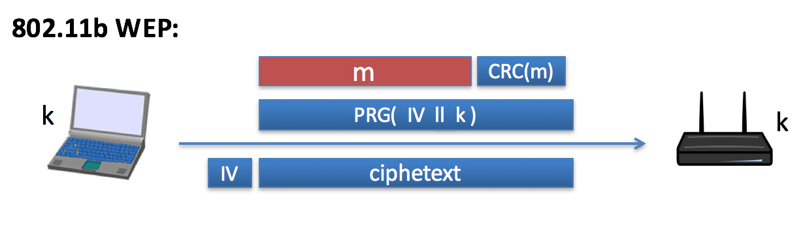
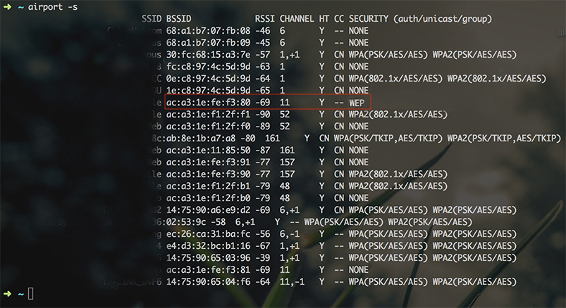
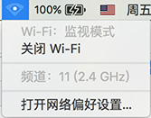
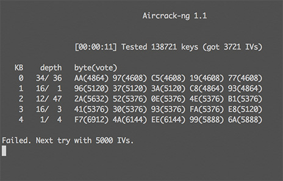
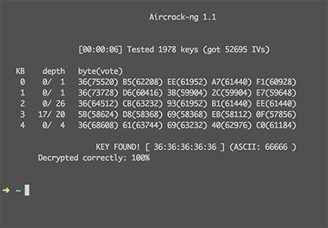

10分钟，我便可以获取你的WEP加密的密钥
开端
凡事都有个开端，此事的开端呢，来自于网络互联课上的女同学的委托，美人有难，英雄岂能不相助？抱歉又中二了，废话不多说，先来了解问题：
问题定位
问题源自一个奇怪的路由器，此路由器品牌特殊，功能也特殊，复位后还有密码，而且密码居然和配套说明书上的不一致（大多数路由器复位后应该是没有密码的），于是这路由器就用不了了，好在机智的我敏锐地发现了该路由器是用WEP加密方式加密的，于是我心里便有了底，便也才敢接下这个任务，当一回初级黑客（窃喜），其实高中时我就利用Linux下的Beini成功破解出过一次WEP密钥，所以感觉我是十拿九稳了，所以才敢夸海口答应下来。
理论
一学期的密码学不是白学的，跟完Dan Boneh大神的密码学课后，WEP加密方式自然被作为错误实现加密方式的典例来介绍了。
RC4
RC4是一种基于流密码的加密方式，所谓流密码加密，主要是和分组密码的加密相对来说，就是说密文是直接由随机置换函数、明文和密钥直接得到的，而分组密码则会把明文分为多个块来加密。
RC4由于没有使用分离的nounce来进行加密，许多RC4的应用仅仅是把nounce和RC4密钥拼在一起当做新的密钥来进行加密，而流密码加密方式的特性导致重复使用同一密钥多次用于加密必然是不安全的，而且不仅仅是相同，只要相似就会很不安全，事实上，很快就有人发现了对RC4的 related key attacks攻击。也就是说RC4本身就是不安全的，现代流密码主要使用 eSTREAM。如果你需要使用流密码来加密某些数据的话，记得一定要使用eSTREAM 而不是RC4。
WEP
RC4本身已经不安全，而基于RC4的WEP加密方式则更进一步，用了一种更不安全的方式来使用RC4实现加密。下面说说WEP加密方式的步骤吧

CRC是用来校验明文的标记，接在明文后，和明文一起用RC4，用IV（就是前文说到的nounce）拼上用户的密钥来作为加密密钥。加密完成后把IV和密文一并发出，由于是对称加密，这样知道密钥的用户辅以获得的IV就可以解密消息了。
但是这里问题在与IV只有24位，也就是说，大约每加密$2^{24} \approx 10^6$ 个密文，就会出现重复的密钥，然而多次使用同一密钥是极其不安全的，攻击者可以轻易的获取你的明文。而WEP加密方式登算是峰造极了，由于密钥重复率高，而且多次使用基本相同的密钥，再加之其底层的RC4流密码加密方式也不安全，还有每次重启后IV还被重置为0，导致了WEP加密方式的密钥都能轻易被获取，更不用说加密后的明文了。所以攻击者只需要收集差不多$10^6$个IV不同的密文就可以轻易获得WEP加密的密钥了，但是由于位数很少，攻击者可以采用Brute Force(暴力破解)和收集IV结合的方式，减少IV的收集工作量，所以差不多现在只要收集差不多4万个IV不同的密文就可以获得密钥了。
实践
说了那么多理论，总得实践实践，虽然说我有Linux虚拟机，Windows虚拟机，Chrome OS虚拟机，但是我还是更喜欢用原生系统来解决这个问题，so我最终还是决定了在OSX下解决这个问题。
获取Airport命令行工具
Airport是OSX自带的一个Wifi管理工具，不过默认状态下是不能直接用的，需要在Terminal下输入如下指令才能开启使用：
|
(注：由于OSX 10.11引入了 System Integrity Protection机制，应该使用如下命令：源自StackOverflow)
|
好，这样Airport 命令行工具已经可以使用了，接下来就是安装我们的主角 aircrack-ng了
安装Aircrack-ng
有多种安装方式，如果你已经有了Homebrew那么可以直接用这样的命令就可以安装Aircrack-ng了：
|
当然一般的方法是你先去搜索－下载－安装了Airport之后，执行一下sudo port -v selfupdate命令后，执行下面的命令进行 Aircrack-ng的安装:
|
开始破解
首先,输入指令:
|
获取当前所有的wifi列表：如下图(SSID被我抹掉了)：

记录下目标的 BSSID和 Channel（后面会用到）
然后变可以开始嗅探数据包了，输入下面命令：
|
en0是我的默认无线网卡的名称，你可以通过ifconfig命令查看你的网卡情况。
然后可以看到你的wifi应该变成这个样子：

然后就是等待了，通常等待5-10分钟（视该网络的繁忙度而定）
按下control+C停止嗅探。
然后Aircrack-ng会告诉你捕获的包的位置（通常在/tmp/下）
由于那个包通常名字比较长，建议是把它复制出来到桌面上改名后进行破解：
在finder中用control+shift+G的快捷键到达目标目录。
这样最后使用下面的命令：
|
即可开始破解了(注意把BSSID换成你的BSSID，cap包名换成你的包名)
失败
如果你嗅探时间过短的话，通常会得到下面的画面：

不要灰心，多花些时间把，可以嗅探的同时干点别的事情。
成功
时间够长的话，可以得到下面的画面：

终于成功啦！ 密码还刚好是66666，感觉我真是66666.
可以看到，收集的IV超过4万个时，破解WEP密钥根本不是难事，理论和实践完美的结合在了一起。